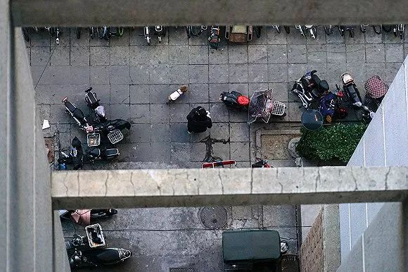
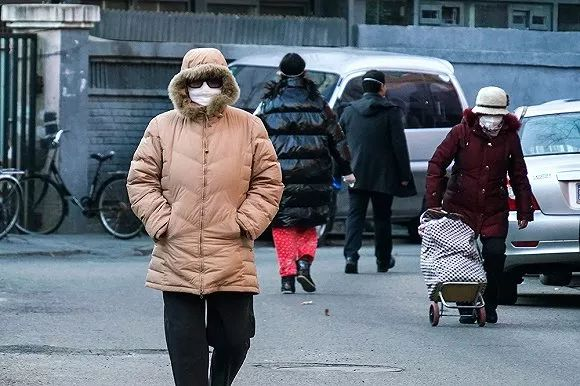
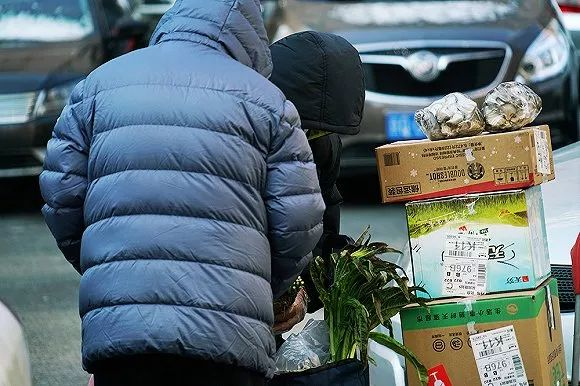
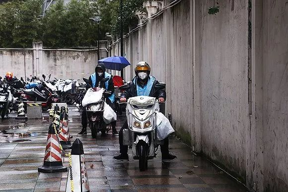
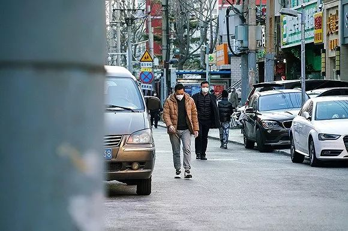
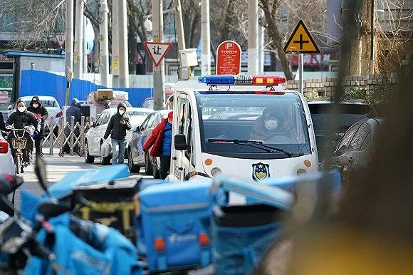

今年北京写字楼新增供应要下滑近一半
原文链接 备份链接 作者：孙梅欣 “ 线上医疗、云办公、远程教育等行业潜藏扩张机遇。 ” 随着2月中上旬企业陆续复工，疫情对商业地产的影响正在逐步展现。 戴德梁行近期的报告显示，针对近期疫情对中国经济的影响，牛津经济研究院(Oxford …
作者：匡达
“
疫情尚未结束，但生活还得继续。
”
目前，我国对新冠肺炎疫情的防控已进入关键时刻。据上海国际问题研究院14日发布的报告评估，全国疫情发展趋势继续企稳向好，整体疫情拐点的出现时间，将取决于中国目前采取的防疫举措的落地和全体民众的配合程度。
疫情笼罩下的周末，京沪两地出门的人依然稀少。居民佩戴口罩，外出采购必要的生活用品和接收快递。在记者所在的北京市海淀区花园路街道小关社区，社区街道已实施封闭式管理，进出的人和车辆都需出示临时出入证和车证。各个小区大门封闭，只保留一个出入口。基本食品和部分生活用品可以在社区街道的超市完成采购。

2020年2月15日，北京，今冬第七场大雪过后，周六开始放晴，居民外出采购蔬菜、84消毒液等生活用品。摄影：匡达

2020年2月16日周日，北京，居民下楼遛狗。摄影：匡达

2020年2月16日周日，北京，走在街道上的市民均佩戴口罩。摄影：匡达

2020年2月16日周日，北京，城管执勤岗亭前的电子屏幕滚动播放文字，提醒民众戴口罩、勤洗手等防疫基本知识。摄影：匡达

2020年2月15日周六，上海，闵行区金汇路一个小区的大门已封闭，门口挂着宣传标语。摄影：范剑磊

2020年2月15日周六，北京，小关西后街已实施封闭式管理，管理员正在将门拉上。摄影：匡达

2020年2月16日周日，北京，小区的一处大门已临时关闭，每个小区只留一个门口进出。摄影：匡达

2020年2月16日周日，北京，小关社区街道上的一家超市正在营业，店员和顾客均佩戴口罩。摄影：匡达

2020年2月15日周六，北京，一位女士戴着口罩拖着购物车走在人行道上。摄影：匡达

2020年2月15日周六，北京，用电动车托运物资的居民。为减少出门次数，人们都尽量一次性采购足够多的生活物资。摄影：匡达

2020年2月15日周六，上海，闵行区金汇路盒马鲜生物流中心外，两名外卖小哥正准备出发。摄影：范剑磊

2020年2月15日周六，北京，一位男士手捧一大袋药品，走在居民小区内。摄影：匡达

2020年2月15日周六，北京，小关街道封闭出入口外侧，快递小哥正在为居民查找快递。摄影：匡达

2020年2月16日周日，北京，小关社区街道上，佩戴口罩行走的居民。摄影：匡达

2020年2月15日周六，上海，雨中一辆电动车停在闵行区金汇路银行门口，驾驶员佩戴口罩。摄影：范剑磊

2020年2月15日周六，北京，小关社区街道上，正在巡逻的警车。摄影：匡达

2020年2月16日周日，北京，居民楼的电梯内贴着通知，要求住户配合疫情防控办理出入证和车证。摄影：匡达
2020年2月16日周日，北京，小关社区街道封闭出入口的工作人员正在检查来往车辆和居民的车证和出入证。摄影：匡达
未经授权 禁止转载

原文链接 备份链接 作者：孙梅欣 “ 线上医疗、云办公、远程教育等行业潜藏扩张机遇。 ” 随着2月中上旬企业陆续复工，疫情对商业地产的影响正在逐步展现。 戴德梁行近期的报告显示，针对近期疫情对中国经济的影响，牛津经济研究院(Oxford …
原文链接 备份链接 在这个艰难又漫长的冬季，每个人都被混沌不安的信息洪流所裹挟。我们关注着每日的疫情动态，抱怨着在家办公的琐屑不便。疫情将我们的生活打回原形，我们不得不为每天的一蔬一饭耗费心力，为跋涉到小区门口取外卖快递而叫苦不迭。 恍然 …
原文链接 备份链接 岛语 非常时期，武汉成了全国人民挂念、祈福的城市。封城后，武汉人民的真实生活是什么样？ 武汉在发生哪些变化？ 正和岛自1月26日起特别推出“叶青专栏”。叶青是一位定居武汉40年的市民，也是一名学者和官员。在过往多期的专 …
原文链接 备份链接 “我在窗台旁看了很长一会雪，特别想家，我们也在问什么时候结束。” “病友们觉得床上有电热毯，冷的话躲在被窝里就行了。医护人员没什么地方可以躲，所以除了个别患者有畏寒的情况，就让医护人员优先用（取暖设备）。” *“一 …
原文链接 备份链接 澎湃新闻 综合报道 2月16日，武汉。在法律政策允许下，两例新冠逝者遗体解剖工作在金银潭医院完成，由解剖获得的新冠肺炎病理，目前已被送检。 澎湃新闻记者 祝文博 编辑 张兆亿 视频来源 相关人士 责任编辑：周宽玮 据参 …